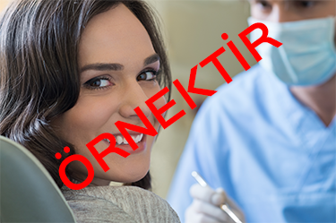

DİKİŞSİZ İMPLANT
DİKİŞSİZ İMPLANT TEDAVİSİ
- Kişiye özel abutment tasarımı ve üretimi
- İmplanttan hemen sonra sabit geçici dişler
- Ağız içi ölçülerin üç boyutlu tarayıcılar ile alınması
- Açık cerrahiye alternatif olarak kapalı cerrahi
- Tek aşamada implant altenatifi
- Panaromik röntgenin yanısıra ücretsiz tomogrofik üç boyutlu görüntüleme
- Özel bilgisayar programlarında implant planlaması
- Elektronik diş renk ölçüm cihazı
- CadCam cihazlarında diş altyapı üretimi
- Gerekli durumlarda lazer destekli tedavi
- 12 farklı implant seçeneği
UYGULAMA ALANLARI
 Kaybedilen dişlerin yerine tedavi amacıyla yerleştirilen, bir süre sonra kemik dokusuyla kaynaşan, doğal bir diş gibi iş görebilen, uygun maddeden yapılmış diş köklerine implant diyoruz.
Tek diş eksikliği, birden fazla diş eksikliği ve tam dişsizlik durumlarının tümünde implant uygulanabilir. Yerleştirilecek alanda yeterli düzeyde kemik olmaması durumda kemik ilave işlemleri ile bir çok vakada başarı ile implant uygulanabilmektedir.
İmplantı vücudun kabul etmemesi gibi bir durum yoktur. İmplant, vücudun herhangi bir reaksiyon göstermediği, alerjik reaksiyonların ve yan etkilerin olmadığı maddelerden yapılmıştır. İmplant sonrası oluşan sorunlar genelde doğru planlama ve sonrasında doğru bir tedavinin uygulanmaması ya da hasta kaynaklı diğer problemlerden kaynaklanır. Tedavi kalitesi ve hastanın ağız diş sağlığına özeni en kritik faktörlerdir. Quisque a nulla libero. Mauris ut lorem nec magna luctus rutrum. Ut rutrum ex et suscipit tincidunt. Sed vel interdum libero, dapibus finibus turpis. Donec mattis ultrices mauris, ac porta tortor pretium ullamcorper. Duis tempor, urna ut rutrum sodales, tortor massa laoreet est, sit amet lacinia.
UYGULAMASINI YAPTIĞIMIZ İMPLANT MARKALARI
ITI Straumann (İsviçre), Nobel Biocare (İsveç), Hiossen (Amerika), Osstem (Güney Kore), Bego (Almanya), Tekka (Fransa). Markalar hakkında detaylı bilgi için implant markaları sayfamızı tıklayınız.
Kapalı Cerrahi (Dikişsiz İmplant) Kimlere Uygulanabilir?
Yeterli kemik uzunluğu ve genişliği olan tüm hastalarda kapalı cerrahi uygulanabilir. Bunun tespiti için hastanın çene kemiğinin üç boyutlu görüntüsünün alınarak hekim tarafından analiz edilmesi gereklidir.
Avantajları Nelerdir?
Cerrahi süre klasik implant cerrahisine göre üçte birlere hatta dörtte birlere düşmektedir. İmplant konumlandırmaları çok daha isabetli yapılabilmektedir. Bu da implantın uzun vadeli başarısına olumlu etki etmektedir. İleri cerrahi gereken bazı vakalarda ileri cerrahiye gerek kalmadan implant yerleştirilebilir. Cerrahi sonrası kanama, ağrı, şişlik çok daha az ve kısa süreli görülmektedir ve hasta ağzında dikiş atılmaz İyileşme süresi çok daha hızlıdır. Daha estetik ve fonksiyonel protezler üretebilmek mümkündür.
Dezavantajlar Nelerdir?
Yeterli kemik ölçücüleri ve kalitesi olmayan hastalarda uygulanamaz. Klasik cerrahiye göre biraz daha maliyetlidir. Doğru planlama yapılmadığı ya da planlamaya uygun şekilde cerrahi yapılmadığı taktirde kapalı cerrahi ile sonuç alınamayıp işlemlere açık cerrahi ile devam edilebilir. Bu alanda hekim deneyimi ve becerisi, klinikte üç boyutlu görüntüleme sisteminin olması son derece önemlidir.